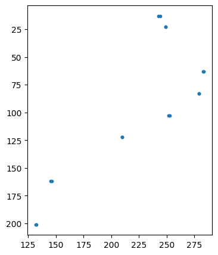
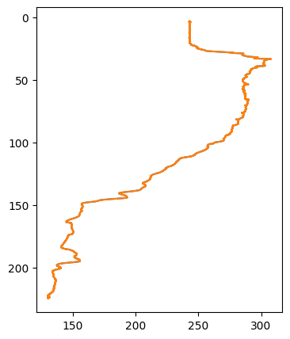
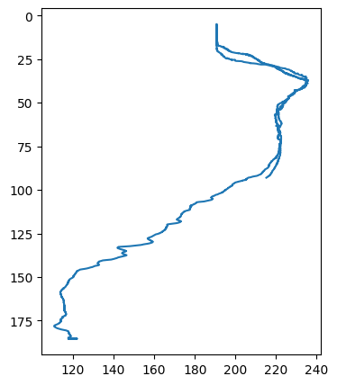
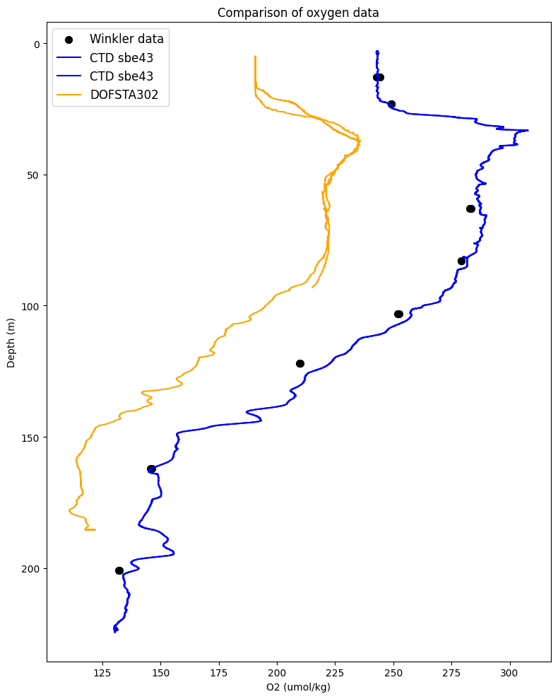

Compare O2 from discrete winkler samples, shipboard ctd rosette (Seabird SBE43), and RCA DOFSTA302 (Seabird SBE43)#
# Import libraries
import re
import pandas as pd
import matplotlib.pyplot as plt
import numpy as np
import xarray as xr
from io import StringIO
Import discrete sample data (Winkler calculation spreadsheet)#
# Import winkler excel sheet locally
df_wink = pd.read_excel(
'./data/Winkler_calculations_19aug25AT50-41.xls',
usecols = 'J,AM', # Select only columns of interest (depth and oxygen concentration)
skiprows=15, # Select rows of insterest eg:skip first 15 rows (i.e. start from row 16)
nrows=16, # Read next 16 rows (16 to 31 inclusive)
header=None,
names=['Depth_wink','O2_wink']
)
df_wink[0:5] #check values
| Depth_wink | O2_wink | |
|---|---|---|
| 0 | 201 | 132.375314 |
| 1 | 201 | 132.025561 |
| 2 | 162 | 145.511525 |
| 3 | 162 | 146.258664 |
| 4 | 122 | 209.775586 |
# Optional: plot winkler data to check
plt.figure(figsize=[4, 5])
plt.scatter(df_wink.O2_wink,df_wink.Depth_wink, s=10)
plt.gca().invert_yaxis()

Import calibration CTD file (cnv)#
# import ctd cnv file locally
datafile_ctd = './data/AT50-41_CTD-007.cnv'
# Load in cruise data file without header and including variable names from file
with open(datafile_ctd,'r') as cruise_data:
lines = cruise_data.readlines()
# 1.Find data start point
for i, line in enumerate(lines):
if line.strip().startswith('*END*'):
data_start = i + 1
break
# 2.Extract variable names from lines like: "# name 0 = t90C: Temperature [C]"
column_names = []
for line in lines:
if line.strip().startswith('# name'):
# Extract the part after '=' amd before the colon (or take full if no colon)
match = re.search(r'# name \d+ = ([^:]+)', line)
if match:
name = match.group(1).strip()
column_names.append(name)
# 3.Read the data section into data frame
data_str = ''.join(lines[data_start:])
df_ctd = pd.read_csv(StringIO(data_str), sep=r'\s+', header=None)
# 4.Assign column names
df_ctd.columns = column_names[:df_ctd.shape[1]] # Trim of mismatch
# 5. optional: show first few rows
print(df_ctd.head())
modError prDM depSM latitude timeS t090C t190C prDM \
0 0 3.341 3.314 45.83344 0.000 17.8460 17.8442 3.341
1 0 3.357 3.330 45.83344 0.042 17.8457 17.8442 3.357
2 0 3.341 3.314 45.83344 0.083 17.8458 17.8442 3.341
3 0 3.341 3.314 45.83344 0.125 17.8458 17.8442 3.341
4 0 3.341 3.314 45.83344 0.167 17.8458 17.8442 3.341
sbeox0Mm/L flag
0 243.146 0.0
1 243.148 0.0
2 243.147 0.0
3 243.147 0.0
4 243.147 0.0
# Optional: plot ctd data to check
plt.figure(figsize=[4, 5])
plt.plot(df_ctd["sbeox0Mm/L"],df_ctd["prDM"],'-')
plt.gca().invert_yaxis()

Import DOFSTA file (netcdf)#
# Load nc file, switch dimensions
localFile = './data/deployment0011_RS03AXPS-SF03A-2A-DOFSTA302-streamed-do_fast_sample_20250818T154501.784469-20250818T173000.948881.nc'
siteData = xr.open_dataset(localFile).load()
siteData = siteData.swap_dims({'obs': 'time'})
# Optional: plot DOFSTA data to check
plt.figure(figsize=[4, 5])
plt.plot(siteData['corrected_dissolved_oxygen'],siteData['depth'],)
plt.gca().invert_yaxis()

O2 comparison plot from discrete samples, ctd calibration cast, and DOFTSA#
plt.figure(figsize=[8, 10])
# Plot winkler
plt.scatter(df_wink.O2_wink,df_wink.Depth_wink, label="Winkler data", color="black",s=50)
# Plot ctd
plt.plot(df_ctd["sbeox0Mm/L"],df_ctd["prDM"], label="CTD sbe43", color="blue")
# Plot DOFSTA
plt.plot(siteData['corrected_dissolved_oxygen'],siteData['depth'], label="DOFSTA302", color="orange")
plt.gca().invert_yaxis()
# Set labels and title
plt.xlabel("O2 (umol/kg)")
plt.ylabel("Depth (m)")
plt.title("Comparison of oxygen data") #example
# Add legend
plt.legend(loc="upper left", fontsize=12)
# Show and save plot
plt.tight_layout()
plt.savefig("./output/O2_comp.png") #example
plt.show()
